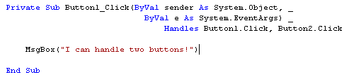

The Click Event
What is an Event?
An event is something that happens. Your birthday is an event. So is Christmas. An event in programming terminology is when something special happens. These events are so special that they are built in to the programming language. VB.NET has numerous Events that you can write code for. And we're going to explore some of them in this section.
We'll start with all that mysterious code for the Button's Click Event.
Exploring the The Click Event
Buttons have the ability to be clicked on. When you click a button, the event that is fired is the Click Event. If you were to add a new button to a form, and then double clicked it, you would see the following code stub:
Private Sub Button1_Click(ByVal sender As System.Object, ByVal e As System.EventArgs) Handles Button1.Click
End Sub
This is a Private Subroutine. The name of the Sub is Button1_Click. The Event itself is at the end: Button1.Click. The Handles word means that this Subroutine can Handle the Click Event of Button1. Without the arguments in the round brackets, the code is this:
Private Sub Button1_Click( ) Handles Button1.Click
You can have this Button1_Click Sub Handle other things, too. It can Handle the Click Event of other Buttons, for example. Try this.
- Start a New project
- Give it the name it Events
- When you new Form appears, add two Buttons to it
- Double click Button1 to bring up the code
- At the end of the first line for the Button, add this:
Handles Button1.Click, Button2.Click
Add a message box as the code for the Button. Your code window might then look
like this (we've used underscores to spread the code out over three lines) :

Run your programme, and then click both of the buttons in turn. The same message box appears, regardless of which one you clicked.
The reason it did so was because the Events that the Button1.Click Subroutine can Handle are at the end: the Events for Button1.Click AND Button2.Click.
You can add as many Events as you want on the End. As long as the Subroutine can Handle them, the Event will happen. For example, you could create two more buttons, and then add the Click Event on the end of the first button:
Handles Button1.Click, Button2.Click, Button3.Click, Button4.Click
When you click any of the four button, the code inside of the Button1_Click Subroutine will fire.
However, if you double clicked button2 to try to bring up its coding window, you'd find that the cursor is flashing inside of the code for Button1_Click. Because you've attached the Click Event of button2 to the Button1 Subroutine, you can't have a separate Click Event just for Button2. This Click Event is Handled By the Subroutine called Button1_Click.
Event Arguments
The arguments for a Button's click event, the ones from the round brackets, are these two (2012 users won't see the ByVal keyword):
ByVal sender As System.Object, ByVal e As System.EventArgs
This sets up two variable: one called sender and one called e.
Instead of sender being an integer or string variable, the type of variable
set up for sender is System.Object. This stores a reference to a control (which
button was clicked, for example).
But because this is the Click Event, there's not much more information available: either the button was clicked or it wasn't.
But you can use other Events available to the button. One of these is the MouseDown Event. The information for the event would be which button was clicked, where the mouse pointer was when the mouse button was held down, and something called Delta (a count of how many notches have been rotated on a mouse wheel).
Let's explore the MouseDown Event.